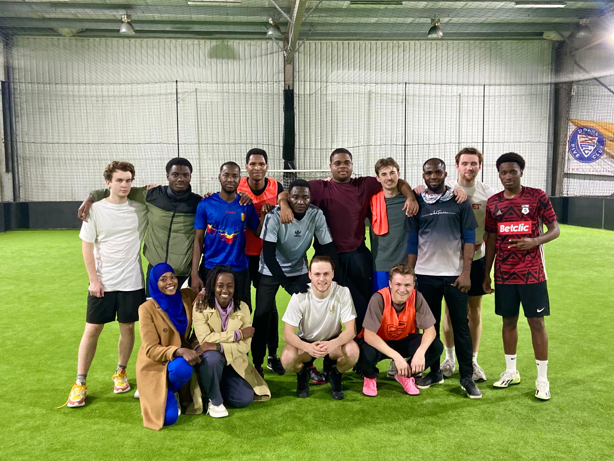
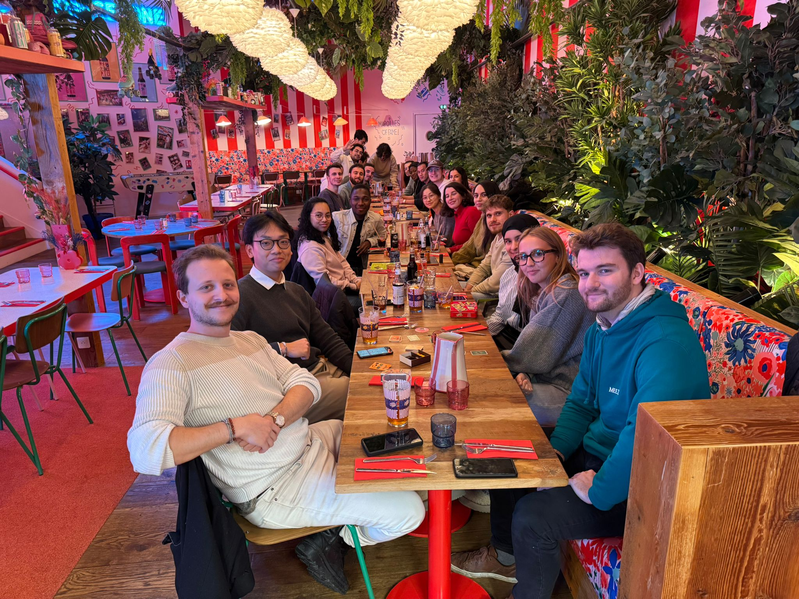
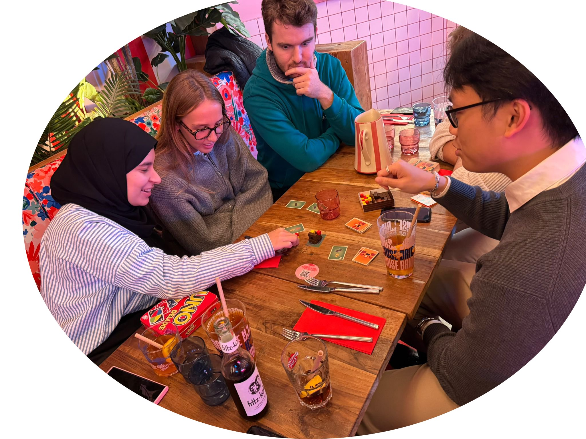

Evenements étudiants
Match de Foot ⚽
Un match de foot plein d’énergie et de convivialité
Après un match intense et disputé ce jeudi 14 novembre 2024, l’équipe SEP APE s’est imposée avec succès face au SEP MATHS au Five de Reims.
Avec une participation active de tous, l’événement a permis de créer un véritable esprit d’équipe et de cohésion estudiantine.
Un grand bravo à tous les joueurs pour leur performance et leur esprit sportif !

Soirée au restaurant 🍽️
Moment de partage autour d’un restaurant convivial

Le lundi 18 novembre 2024, place à Brique House pour une soirée chaleureuse et mémorable. Cette rencontre a rassemblé les étudiants SEP du moment ainsi que les anciens du master.
Ce moment fut riche en discussions et en partage avec des parties de divers jeux comme UNO ou Babyfoot, accompagnés d’une agréable dégustation.
Une belle occasion de renforcer nos liens dans une ambiance festive !

ive
actions bénévoles

Dans le cadre du module « implication dans la vie étudiante », les étudiants du master ont eu l’opportunité de collaborer avec différentes structures de la ville de Reims, s’engageant ainsi dans des actions solidaires et citoyennes.
A l’occasion de l’année universitaire 2025/2026, ils ont mené des actions bénévoles auprès de publics variés, aussi bien auprès des plus jeunes que des personnes âgées, notamment au sein de l’EHPAD Wilson et de la maison de quartier Croix-Rouge – La Passerelle.
Parmi les activités proposées, on peut citer l’atelier « Raconte-moi une histoire », favorisant les échanges intergénérationnels et la découverte des parcours de vie des résidents, une sortie au marché de Noël, l’organisation d’une chasse au trésor au sein de la maison de quartier, un après-midi jeux de société à l’université, mais surtout un accompagnement et un soutien régulier des bénéficiaires dans les différentes activités proposées par les structures partenaires.
Ces engagements ont permis aux étudiants de ressentir un véritable sentiment d’utilité, tout en offrant aux enfants et aux résidents des moments de partage et des souvenirs précieux, que les étudiants conserveront en mémoire.
Ces structures sont en constante recherche de bénévoles afin d’accompagner au mieux leurs bénéficiaires. À tout moment de votre parcours, vous avez ainsi la possibilité d’enrichir votre cursus universitaire par des activités associatives, humaines et formatrices.
📄 ouvrir le flyer réalisé
{kind=link}

Contact des structures partenaires
Maison de Quartier Croix-Rouge – La Passerelle
📠2 Allée des Landais, 51100 Reims
📠03 26 36 03 50
✉️ lapasserelle@maisondequartier-reims.fr
Résidence Wilson (EHPAD)
📠25 Boulevard Président Wilson, 51100 Reims
📠06 17 18 17 29 — Sultane Gianonatti Can, animatrice
🔗 Page Facebook de la Résidence Wilson